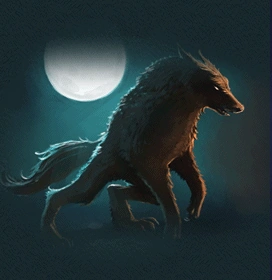

Фенікс
Фе́нікс — чарівний птах, який, за уявленням стародавніх народів (фінікійців, єгиптян), через кожні 500 років прилітав з Аравії до Єгипту. Фенікс живився бальзамом і смолою. Коли він відчував, що надходить смерть, будував гніздо з пахучих гілок на верхів'ї пальми, і там його спалювало сонце. Потім птах воскресав з попелу, відроджувався юним. У Єгипті фенікс є символом сонячного початку, воскресіння та безсмертя. Єгиптяни порівнювали «фенікс» з богом сонця — Ра. Коли прадавні єгиптяни уявляли бога в подобі птаха, його рух по небосхилу впродовж дня порівнювався з польотом. Так, у Геліополісі, центрі сонячного бога Атума, який злився потім з Ра, склався міф про появу світила у вигляді фенікса. Фенікс вважався ба (душею, духовною силою) бога Ра, а також формою виявлення Озириса: «Як фенікс пройду я через краї потойбічного світу» («Книга Мертвих»). Фенікс вважався «господарем ювілеїв», що пояснювалося уявленням про довге життя чудесного птаха.
Дракон
Драко́н — збірна назва, що об'єднує ряд вигаданих істот, переважно змієподібних, великих розмірів, частоз додаванням ознак інших тварин. Слово «дракон» використовується в найменуваннях деяких реальних видів хребетних, переважно рептилій і риб. Образ дракона поширений в міфах і легендах, знайшов широке поширення в фентезі, а також використовується в окультизмі та містиці. Міфи й легенди про драконів відомі практично всім народам світу. Характеристики драконів і ставлення до них у різних культурах відрізняються. В традиції країн Далекого Сходу дракони здебільшого зображуються із приязню, добрими, покровителями людей. Західній традиції властиве зображення драконів злими істотами.
Перевертень
Перевертень — міфічна істота, здатна тимчасово змінювати свою подобу магічним шляхом, перетворюючись (обертаючись, перекидаючись) з людини на іншу істоту, рослину чи предмет, і навпаки. В європейському фольклорі найхарактернішим образом перевертня є людина-вовк вервольф , у слов'янській міфології відомий як вовкулака.На відміну від більшості повір'їв , перевертень може обернутися не тільки на тварин, але і на шматок палиці, копицю сіна, клубок, камінь. Перед перетворенням завжди б'ється об землю. Вважалося, що подібний перевертень — це дитя, яке померло нехрещеним, або віровідступник. На Півночі перевертня часто іменували «кікіморою». Властивість перевертнів приписували домовикові та відьмі. Прокляті та нехрещені діти чи відьми могли набувати різних речових виглядів і потім теж обертатися на тварин.
Інші міфічні тварини
Гідра
Химера
Привид
Гном